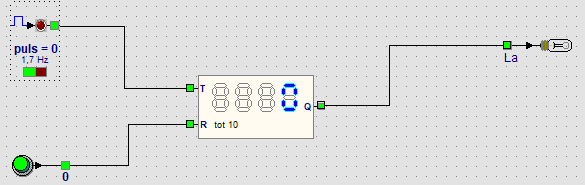

Parcours › Avancé › Leçon 19 sur 25

Le bloc compteur de la leçon 8 compte en binaire, de 0 à 15, et a besoin d’un afficheur séparé. Le compteur de pas compte en nombres ordinaires (décimaux) jusqu’à 9999 et affiche lui-même la valeur. Grâce à la sortie Q, le reste du circuit sait quand c’est assez : après 10 boîtes, 100 pas ou 1000 tours.
Regardez aussi la barre d’état en bas : avec la souris sur le compteur de pas, vous y lisez la valeur et la valeur finale.
Faites en sorte que la lampe ne s’allume qu’après 1000 impulsions. Comment aller plus vite ?
Arrêtez la simulation, déverrouillez le compteur de pas (clic droit, Déverrouiller) et choisissez Jusqu’à 1000 avec le bouton droit. Pour compter plus vite, faites un clic droit sur le générateur d’impulsions et choisissez 5 Hz sous Fréquence. Cela prend encore plus de trois minutes : 1000 impulsions de 0,2 seconde chacune.
Faites compter le compteur toujours de 1 à 10, sans le bouton-poussoir. Que fait la lampe ?
Faites un clic droit sur le compteur de pas et cochez Répéter. Après 10, l’impulsion suivante recommence à 1. La lampe s’allume pendant une impulsion, à chaque dixième impulsion : un signal toutes les dix.
Ouvrez l’exemple de la leçon 16 et comptez combien de fois la personne arrive à droite. Après 5 fois, une lampe doit s’allumer.
Placez une deuxième fin de course dans l’entrée et choisissez S2 (à droite) avec le bouton droit. Reliez-la à un compteur de pas avec la valeur finale 5, et une lampe sur Q. Lancez la simulation et mettez l’interrupteur en marche : chaque fois que la personne arrive à droite, le compteur de pas ajoute un.